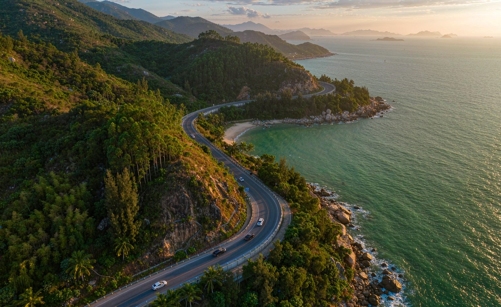

Gallery
这趟会看到什么
跨海大桥、灯塔、风车山、老城骑楼，还有几样必须亲口尝的东西。

四晚都住汕头东海岸的海景房，不动行李。10/2 一早开车上南澳岛，68 公里环岛公路走一整圈， 在风车山看完日落再回来。剩下三天全部留给汕头老城 —— 牛肉火锅、生腌、甘草水果、本土茶饮， 你点名的那几家一家不落。
南澳国庆的岛上房价会翻倍、条件还一般。而它的核心价值从来不是某个景点，是那条 68 公里的山海公路 —— 灯塔、风车、渔港、礁石海岸串成一条线，沿途比单点好看。当「沿海公路自驾一日游」玩很值；当「海岛度假」确实不划算。
逆时针环岛 68 km，含午餐休息全天 8–9 小时。7:30 上岛、18:30 看完日落出岛，这是南澳最标准的玩法。
国庆南澳海景房 450–900 元/间且房源紧张。这钱挪到汕头东海岸，能住到带停车场和充电桩的正经海景房。
东海岸片区就在市区东侧，去南澳大桥比住老城小公园还快。早起出发完全来得及抢 6:00–10:00 的过桥时段。
第一件时间最紧。不住岛上，你就用不了「住宿代办」那条通道。
四晚全部住汕头东海岸，行李不用搬。唯一的长途出行是 10/2 的南澳一日往返。
中午 12:00 出发走深汕高速，340 km，中途补一次电。晚上落汕头东海岸海景房，若还有力气就去龙眼南路吃个夜宵。
全天最重的一天：06:00 出发，06:40 过桥，逆时针绕完 68 km 环岛公路。风车山看完日落，回后宅吃晚餐，20:00 后出岛。
小公园骑楼、汕头旅社、鮀茶堂喝芝芝潮汕青芒，金新路拎一盒梅汁水果，金砂东路收一份炒酸奶，晚场杏花吴记。
睡到自然醒，把前两天没排上的店补齐。下午在妈屿岛、礐石、陈慈黉故居里挑一个，傍晚买手信收尾。
07:30 前上路。10/5 返程比 10/6、10/7 好走太多 —— 免费期还没结束，但大部队还没动。
跨海大桥、灯塔、风车山、老城骑楼，还有几样必须亲口尝的东西。